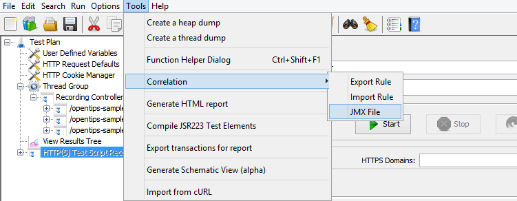
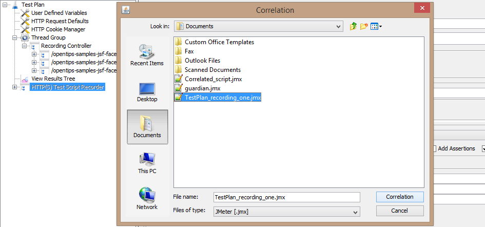
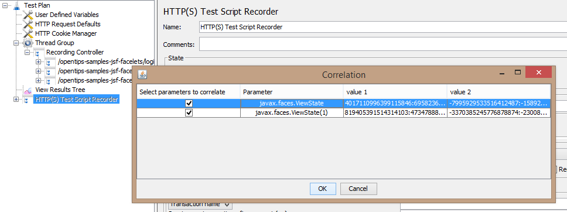
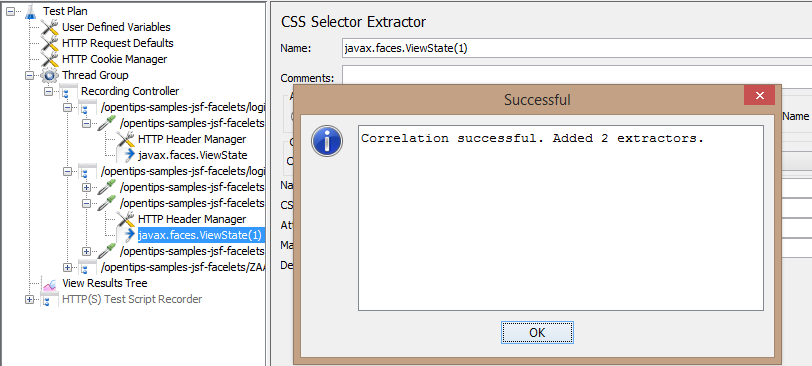
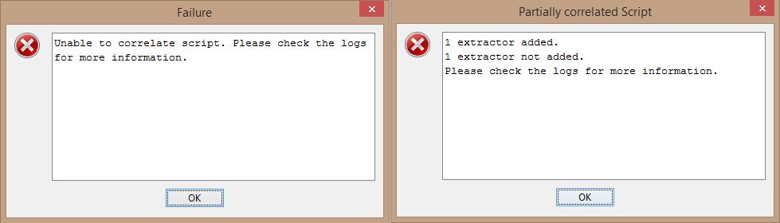
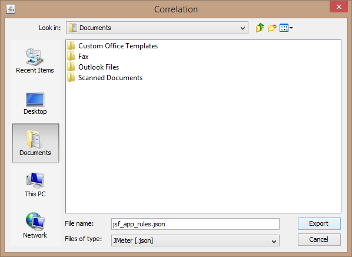
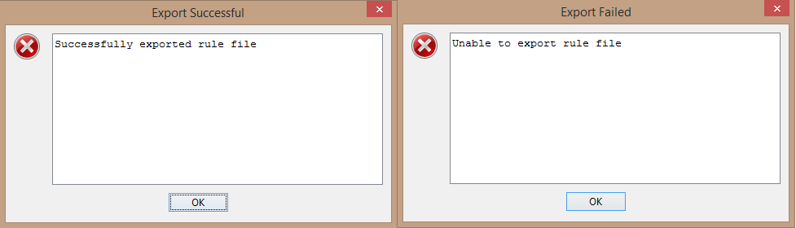

Auto-Correlation feature detects the dynamic parameters and adds response data extractors for them.
A Test Plan using HTTP(S) requests can be correlated using this functionality.
1.Record a Test Plan for a testing scenario. Save it (say TestPlan_recording_one.jmx).
2.Record another Test Plan with the same scenario.
(Important)
3.Click on Tools → Correlation → JMX File. 
Figure 1 - The menu where correlation via JMX file is located
A browse file menu will open.

Figure 2 - The browse menu for JMX file
4.Browse for the Test Plan saved in Step 1 (TestPlan_recording_one.jmx)
5.Click on Correlation.
A list of dynamic (correlatable) parameters will be displayed in the table.
For more details on the parameter naming convention refer here.

Figure 3 - The list of parameters which can be correlated
6.Select the parameters you want to correlate and Click OK.
If successful, the following dialog box will be displayed and extractors
will be added in the script.

Figure 4 - Successful Correlation

Figure 5 - Failure and Partial failure dialog boxes
Browse for the directory where you want to save the rule file and Click Save. 
Figure 7 - Save Rule File
A popup will be displayed for successful/failed rule export.

Figure 8 - Success/Failure dialog boxes
Import Rule
After you have created the rule file, a Test Plan can be correlated using that rule file.
Details about the rule file format can be referred here.
Correlate an empty test plan or a test plan with no HTTP Requests.
Example: Create a new test plan and try to correlate it using either JMX File or rule file.
Error: Current GUI TestPlan doesn't have any HTTP(S) Requests. Please record a plan and try again.
Correlate a test plan which is not a recorded plan.
Example: Open an existing test plan and try to correlate it using either JMX file or rule file.
Error: No Response data found. Make sure you have recorded the script and not opened it.
Correlate using an empty/invalid JMX file.
Example: Record a test plan and try to correlate it using an empty JMX test plan.
Error: Could not load the JMX file. Please check the file and try again.
Correlate using a JMX file with no HTTP requests.
Example: Record a test plan and try to correlate it using a JMX test plan with no HTTP Requests.
Error: Imported JMX file doesn't have any HTTP(S) Requests. Please check the file and try again.
Correlate while recording is still running.
This must be avoided in order to avoid any crashes.
Best practices
Only select the parameters which you thing should be correlated.
Dynamic parameters' list include parameters which should not be correlated for example username, password, date, etc...
Hence, select the parameters from the list who you think should be correlated for example authToken, csrf token, etc...
Parameter in request header (Authorisation)
Correlatable Parameter Name = "Authorisation"
Parameter in request body or query string
Correlatable Parameter Name = Actual Parameter Name
If parameter occurs twice or more then correlatable parameter name is appended by
"(parameter count)"
Example: authenticity_token, authenticity_token(1)

{kind=link}
{kind=link}
{kind=link}
{kind=link}
{kind=link}
{kind=link}
{kind=link}
{kind=link}
{kind=link}
{kind=link}